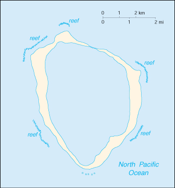

![[Country Flag of Clipperton Island]](../flags/ip-lgflag.jpg)
| Clipperton Island |
|
       |  | |
| Geography |
Location: Middle America, atoll in the North Pacific Ocean, 1,120 km southwest of Mexico
Geographic coordinates: 10 17 N, 109 13 W
Map references: World
Area:
total:
7 sq km
land:
7 sq km
water:
0 sq km
Area - comparative: about 12 times the size of The Mall in Washington, DC
Land boundaries: 0 km
Coastline: 11.1 km
Maritime claims:
exclusive economic zone:
200 nm
territorial sea:
12 nm
Climate: tropical, humid, average temperature 20-32 degrees C, rains May-October
Terrain: coral atoll
Elevation extremes:
lowest point:
Pacific Ocean 0 m
highest point:
Rocher Clipperton 29 m
Natural resources: none
Land use:
arable land:
0%
permanent crops:
0%
permanent pastures:
0%
forests and woodland:
0%
other:
100% (all coral)
Irrigated land: 0 sq km (1993)
Natural hazards: subject to tornadoes
Environment - current issues: NA
Geography - note: reef about 8 km in circumference
| People |
Population: uninhabited (July 2000 est.)
| Government |
Country name:
conventional long form:
none
conventional short form:
Clipperton Island
local long form:
none
local short form:
Ile Clipperton
former:
sometimes called Ile de la Passion
Data code: IP
Dependency status: possession of France; administered by France from French Polynesia by a high commissioner of the Republic
Flag description: the flag of France is used
| Economy |
Economy - overview: Although 115 species of fish have been identified in the territorial waters of Clipperton Island, the only economic activity is tuna fishing.
| Transportation |
Ports and harbors: none; offshore anchorage only
| Military |
Military - note: defense is the responsibility of France
| Transnational Issues |
Disputes - international: none